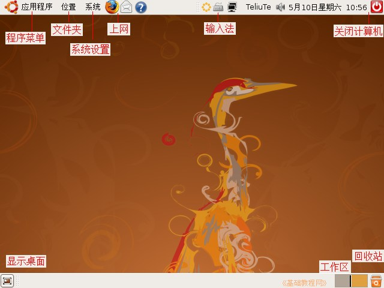
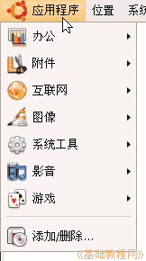
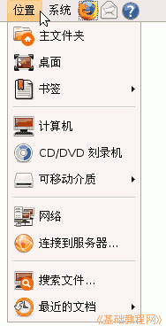
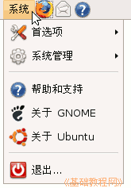

和关机退出按钮在右上角，还有音量调节和日期时间修改，有时候还会出来一个小星星，这是更新提示；
和关机退出按钮在右上角，还有音量调节和日期时间修改，有时候还会出来一个小星星，这是更新提示；电脑操作基础
作者：TeliuTe 来源：基础教程网
一、认识桌面 返回目录 下一课Ubuntu启动成功后，就会显示一个界面，我们把它称为“桌面”，桌面也是我们认识电脑的第一步，下面我们来看一个练习；
1、认识桌面
1）工作区 桌面上的大片空白称为工作区，上面可以放置各种图标，显示打开的窗口，上边和下边各有一个面板条，
上面板条包括菜单、快捷图标、输入法、关机按钮等，下面板条有显示桌面、工作区、回收站按钮；

快捷按钮中常用的是上网的火狐浏览器图标，以后自己还可以添加别的程序到这儿，
2）在应用程序菜单里有各种程序，包括上网、办公、图像、音乐等，用到的时候可以进去找，
附件里面的文本编辑器相当于Windows里的记事本，终端程序也在附件里；

3）位置菜单是各个磁盘分区和文件夹，里面的“主文件夹”相当于Windows里的“我的文档”，
“计算机”相当于的“我的电脑”，“可移动介质”是其他磁盘分区和U盘等；

4）系统菜单里，包括首选项和系统管理，首选项里有分辨率和网络是在，在系统管理有系统监视器、新立得、硬件驱动；

5）输入法和关机退出按钮在右上角，还有音量调节和日期时间修改，有时候还会出来一个小星星，这是更新提示；
6）在下边的面板条左边的按钮是“显示桌面”，中间是任务栏，最右边是回收站，删除的文件先放在这儿，
旁边的两个小方块是两个桌面工作区，点击切换可以可以有更多的空间；
2、练习
1）说出桌面的三个组成部分，
2）在上面板条上从从左到右挨着点击各个按钮，在出来的窗口点“叉”按钮关闭；
3）打开回收站，然后再关闭它；
本节学习了Ubuntu的桌面和菜单操作，如果你成功地完成了练习，请继续学习；本教程由86团学校TeliuTe制作|著作权所有
基础教程网：http://teliute.org/
美丽的校园……
转载和引用本站内容，请保留版权信息和本站链接。